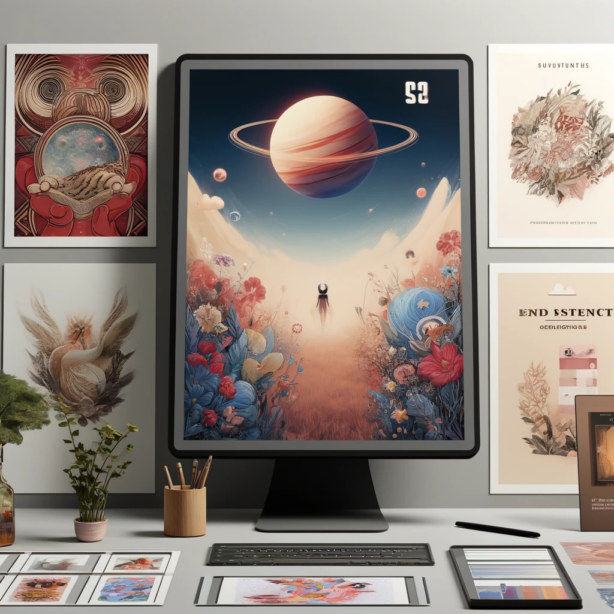

About Me

Learning a new tool or software is a great way for me to sharpen my skills and improve my creativity. For example, since I’m into graphic design, programs like Adobe Photoshop or Illustrator can help me create professional and detailed designs. I can start by learning the basics, like working with layers, masking, and color adjustments, before moving on to more advanced projects. If I enjoy digital art, Procreate is an excellent app that lets me create stunning digital drawings with lots of flexibility and styles to explore. If I prefer something simpler and quicker, Canva is a great option for designing posters, invitations, or promotional materials. It’s user-friendly and comes with templates I can easily customize. By spending time learning these tools, I’ll not only improve my skills but also gain valuable experience that can be useful for future jobs or club activities. I can start with free tutorials on YouTube or take online classes for more detailed guidance.
Some of My Works

I am also passionate about learning new technologies and digital tools to continuously enhance my creative and professional capabilities. My approachable nature and enthusiasm for helping others have fostered strong teamwork, although I am actively refining my ability to set healthy boundaries to maintain balance.
Thank you for this opportunity to introduce myself. I’m looking forward to learning and growing with all of you!
| Home |
| About Me |
| Education |
| Skills |
| Experience |
| Achievement |
| Contact Me |

|
Copyright © 2024 Nur Najlaa Aqilah Official Website. All Rights Reserved. Education
Best view : Chrome 131.0 & 1920x1080
Last update : Jan 10, 2025